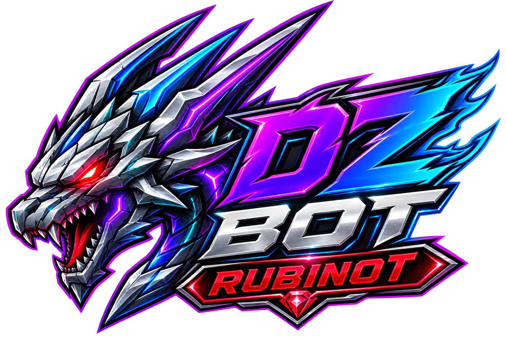

✕
MÉTODO ANTIGOTeamSpeak + consulta manual
- Informação fragmentada em várias telas
- Boss depende de alguém lembrar de consultar
- Bazaar passa enquanto a PT está ocupada
- Mortes e movimentação sem contexto
- Comunicação reativa e repetitiva

DZbotRUBINOT INTELLIGENCEFalar com vendedor →O DZbot transforma sinais do RubinOT em decisão: players, bosses, Bazaar, skills, mortes, rankings, PT e War Room — organizados onde seu time já se comunica.
Escolha um módulo e veja como a informação chega ao Discord.
Pesquise pelo que você quer fazer, veja quando usar cada recurso, copie exemplos e aprenda os fluxos que realmente ajudam no jogo. Comandos administrativos e de manutenção não aparecem aqui.
O DZbot tem muita coisa além de responder perguntas. Ele mantém contexto, observa sinais e conecta players, PT, Bazaar, PvP, bosses, eventos e a base do jogo dentro do Discord.
Tente player, bazar, boss, hunt, ranking, item, respawn ou evento.
Nem tudo exige slash command. Depois que a guild está configurada, várias camadas continuam observando e entregando sinais automaticamente.
Os fluxos abaixo mostram como transformar os comandos em situações reais de jogo.
Vitrine automática com cenários do DZbot, prova visual e contexto comercial.
O DZbot transforma histórico, sinais e janelas em atenção operacional para sua guild/PT.
Leitura de atividade e padrões do personagem.
Top por vocação, filtros e watch de oportunidades.
Online, composição e sinais da equipe.
Guild/PT, prioridades e canais.
Só o que gera valor para o servidor.
Canais e rotas isolados por cliente.
O DZbot passa a observar e entregar sinais.
O produto é customizado por guild/PT e o orçamento acompanha o escopo.
Menos pergunta repetida. Menos tela aberta. Mais contexto, reação e jogo.